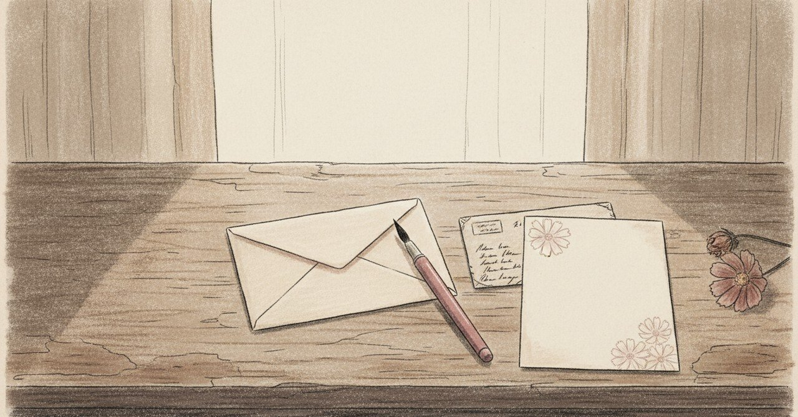

亡き母への手紙

母が亡くなって、20年経っていた。
2025年の6月、ふとした流れで、祖母と父への手紙を書こうと思い立った。 祖母は92歳、父は75歳。 自分は50歳まであと5年で、5年後には祖母はもういないかもしれない。
その時のジャーナリングに、こう書いた。
20年前に亡くなった母にも書くか？
問いかける形で書いたことが、すでに答えだった気がする。
ハガキで書くからね
最初に書いたのは、祖母宛だった。 ハガキで書いた。
おばあちゃんといっしょに暮らした小学生時代 黄色い原付バイク よく作ってくれたひじき煮 安定の美味しさのチキン南蛮 これまでたくさんの優しさをありがとうって伝えたい
具体情景を書いた。 「ありがとう」だけだと、どこにも届かない。 黄色い原付、ひじき煮、チキン南蛮。物の名前にすると、ハガキの裏面に祖母の家が戻ってきた。
父に送った手紙に、感動したと言われた
続けて、父に手紙を書いた。 何を書いたかは、ここには書かない。本人に宛てたものだから。
送った数日後、父から連絡があった。 「感動した」と言ってくれた。
その時、僕の中で何かが戻ってきた。
表現を届けると、受け取った側の人生に温度が足せる。 書くことが、自分のためだけじゃなくなる瞬間を、45歳で初めて実感した気がする。
20年書けなかった宛先に
父のあと、亡き母にも手紙を書くと決めた。
20年、書けなかった。 書けなかった理由は、たぶん、「返事が来ない」という事実に耐えられなかったから。
手紙は、返事を期待する形式だ。 「ありがとう」の次に「元気ですか？」と書ける相手がいない寂しさに、20年、蓋をしていた。
45歳になって、ようやく気づいた。
返事のない宛先に書くことは、自分への返事でもある。
母に書いている字の一つひとつを、僕は自分で読み返していた。 母がどう読むかはわからない。でも、書いた自分が、自分の字を読んでいた。
遅い表現手段を、選んだ
手紙を書き始めてから、秋桜の便箋を選ぶようになった。 筆ペンで書く練習も始めた。写経もやってみた。
メールでもLINEでもなく、紙にペンで書く。 速く届くことより、書いている間の自分の時間を大切にしたかった。
遅い表現手段は、届くための手段じゃなくて、書く側の時間を作るための手段だった。
20年書けなかったのは、手紙が速すぎる現代の中で、遅く書く余白を持てなかったからだ。 余白ができて初めて、遅い手紙が書けた。
5年後の家族タイムライン
5年後、僕は50歳。 父は80歳。祖母はもういないかもしれない。
その時間軸を書き出した瞬間、「書けるうちに書く」という優先順位が、急に自分の中で上がった。
母には、書けなくても、ずっと書けた。書かなかっただけだった。 祖母や父には、書ける時間に上限がある。
書ける相手と、書けない相手と、両方に書くこと。 それが、20年越しでやっと整った、自分の手紙の形だった。
書けない宛先にも、書いていいんだと思う。 書かないと、渡せないものがある。
感情や記憶の整えを手伝うLINE Bot「もやログ」を作っています。